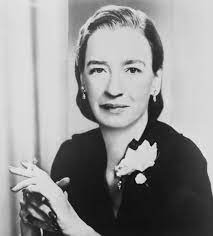

Uma mulher a frente do seu tempo!
Nascimento: 09 de dezembro de 1906
Aos 17 anos ingressa no tradicional Vassar College, onde, em 1928, obteve o bacharelado em matemática e física.
Em 1934, na Universidade Yale conquistou o doutorado em matemática. E, nessa instituição ela se interessou por
computadores.
Começou a trabalhar no desenvolvimento das primeiras linguagens e ao mesmo tempo trabalhava como professora
de matemática no Vassar.
Em 1941, com o início da Segunda Guerra Mundial, Hopper tentou se alistar, mas foi rejeitada pela idade e por
não ter estatura física suficiente e por seu trabalho de professora ser considerado valioso durante os esforços de guerra.
Em 1943, conseguiu fazer parte do corpo de reservista. Após treinamentos, ingressou na equipe de programação
Mark I, que foi utilizado para cálculos do desenvolvimento da bomba atômica pelo Projeto Manhattan.
Em 1945, Grace e a equipe observaram que uma máquina estava com problemas para funcionar e, ao desmontarem o aparelho, viram
uma mariposa presa entre os cabos, que estava prejudicando o funcionamento da mesma.
Assim a equipe "debugged" - desbugou - o aparelho voltou a funcionar.
"Bug" significa inseto e debugged (de + bugged) refere-se à retirar o inseto do lugar.
Esse evento ajudou a estabilizar a nomenclatura de "bug" para problemas eletrônicos e "desbugar para resolução desses problemas.
Hopper recebeu importantes condecorações e homenagens póstumas:
- teve seu nome inscrito no Hall da Fama das Mulheres dos EUA;
- um navio de guerra batizado com seu nome (USS Hopper);
- foi agraciada com a Medalha Presidencial da Liberdade pelo ex-presidente Barack Obama em 2016.